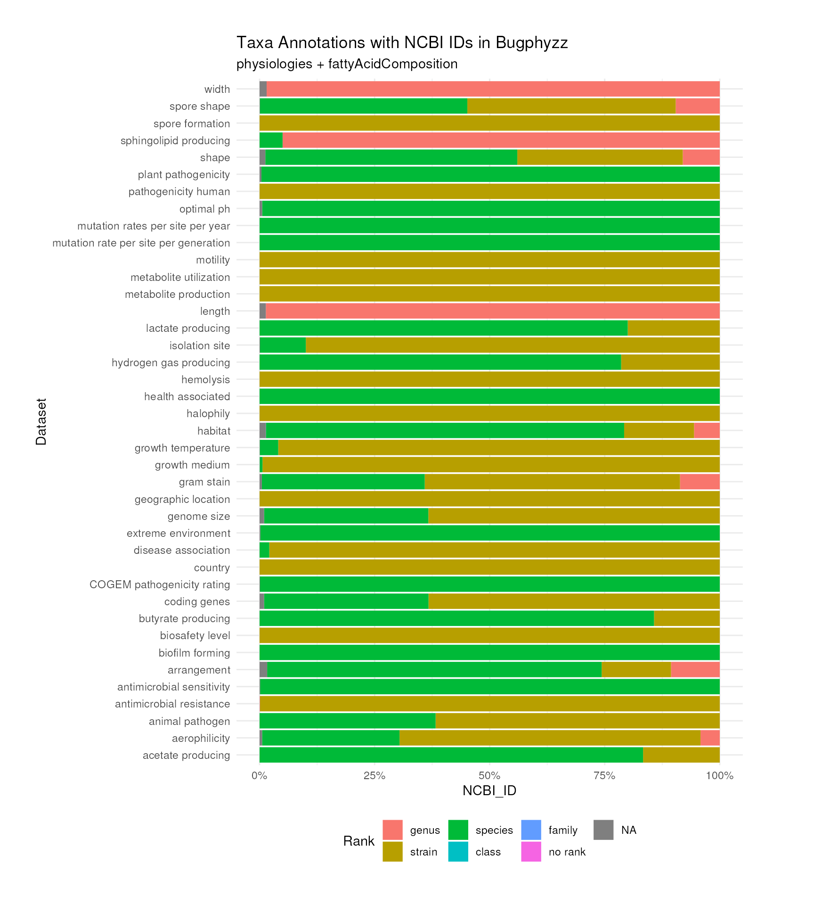

vignettes/articles/descriptive_statistics.Rmd
descriptive_statistics.Rmd
phys <- physiologies(keyword = "all")
taxonomy_table <- bugphyzz:::taxonomyAnnotations
## remove prefix
colnames(taxonomy_table) <- sub("bugphyzz_", "", colnames(taxonomy_table))
## Select only columns with rank names, not rank ids
taxonomy_table <- select(taxonomy_table, -ends_with("_id", ignore.case = FALSE))
taxonomy_table$NCBI_ID <- as.integer(taxonomy_table$NCBI_ID)
taxonomy_table %>%
count(rank) %>%
arrange(-n)
#> rank n
#> 1 species 9273
#> 2 strain 6251
#> 3 genus 1695
#> 4 class 1
#> 5 family 1
data <- phys %>%
map(~ select(.x, all_of(c("NCBI_ID", "Rank")))) %>%
map(~ modify_at(.x, "NCBI_ID", as.character)) %>%
bind_rows(.id = "dataset") %>%
as_tibble()
data %>%
mutate(Rank = forcats::fct_relevel(Rank, "genus", "strain", "species")) %>%
ggplot(aes(dataset)) +
geom_bar(aes(fill = Rank), position = "fill") +
scale_y_continuous(label = scales::percent) +
labs(x = "Dataset", y = "NCBI_ID",
title = "Taxa Annotations with NCBI IDs in Bugphyzz",
subtitle = "physiologies + fattyAcidComposition") +
coord_flip() +
theme_minimal() +
theme(legend.position = "bottom", plot.margin = unit(c(1,2,1,1),"cm"))
sessionInfo()
#> R version 4.3.0 (2023-04-21)
#> Platform: x86_64-pc-linux-gnu (64-bit)
#> Running under: Ubuntu 22.04.2 LTS
#>
#> Matrix products: default
#> BLAS: /usr/lib/x86_64-linux-gnu/openblas-pthread/libblas.so.3
#> LAPACK: /usr/lib/x86_64-linux-gnu/openblas-pthread/libopenblasp-r0.3.20.so; LAPACK version 3.10.0
#>
#> locale:
#> [1] LC_CTYPE=en_US.UTF-8 LC_NUMERIC=C
#> [3] LC_TIME=en_US.UTF-8 LC_COLLATE=en_US.UTF-8
#> [5] LC_MONETARY=en_US.UTF-8 LC_MESSAGES=en_US.UTF-8
#> [7] LC_PAPER=en_US.UTF-8 LC_NAME=C
#> [9] LC_ADDRESS=C LC_TELEPHONE=C
#> [11] LC_MEASUREMENT=en_US.UTF-8 LC_IDENTIFICATION=C
#>
#> time zone: Etc/UTC
#> tzcode source: system (glibc)
#>
#> attached base packages:
#> [1] stats graphics grDevices utils datasets methods base
#>
#> other attached packages:
#> [1] ggplot2_3.4.2 purrr_1.0.1 dplyr_1.1.2 bugphyzz_0.0.1.3
#>
#> loaded via a namespace (and not attached):
#> [1] gtable_0.3.3 xfun_0.39 bslib_0.4.2 lattice_0.21-8
#> [5] vctrs_0.6.2 tools_4.3.0 generics_0.1.3 curl_5.0.0
#> [9] parallel_4.3.0 tibble_3.2.1 fansi_1.0.4 RSQLite_2.3.1
#> [13] highr_0.10 blob_1.2.4 pkgconfig_2.0.3 data.table_1.14.8
#> [17] dbplyr_2.3.2 desc_1.4.2 uuid_1.1-0 lifecycle_1.0.3
#> [21] farver_2.1.1 conditionz_0.1.0 compiler_4.3.0 stringr_1.5.0
#> [25] textshaping_0.3.6 munsell_0.5.0 taxizedb_0.3.1 codetools_0.2-19
#> [29] htmltools_0.5.5 sass_0.4.6 yaml_2.3.7 pillar_1.9.0
#> [33] pkgdown_2.0.7 crayon_1.5.2 jquerylib_0.1.4 tidyr_1.3.0
#> [37] cachem_1.0.8 iterators_1.0.14 foreach_1.5.2 nlme_3.1-162
#> [41] tidyselect_1.2.0 digest_0.6.31 stringi_1.7.12 labeling_0.4.2
#> [45] forcats_1.0.0 rprojroot_2.0.3 fastmap_1.1.1 grid_4.3.0
#> [49] colorspace_2.1-0 cli_3.6.1 magrittr_2.0.3 bold_1.3.0
#> [53] crul_1.4.0 utf8_1.2.3 ape_5.7-1 withr_2.5.0
#> [57] scales_1.2.1 rappdirs_0.3.3 bit64_4.0.5 rmarkdown_2.21
#> [61] bit_4.0.5 ragg_1.2.5 zoo_1.8-12 memoise_2.0.1
#> [65] taxize_0.9.100 evaluate_0.21 knitr_1.43 mgsub_1.7.3
#> [69] hoardr_0.5.3 rlang_1.1.1 Rcpp_1.0.10 glue_1.6.2
#> [73] DBI_1.1.3 httpcode_0.3.0 xml2_1.3.4 jsonlite_1.8.4
#> [77] R6_2.5.1 systemfonts_1.0.4 fs_1.6.2